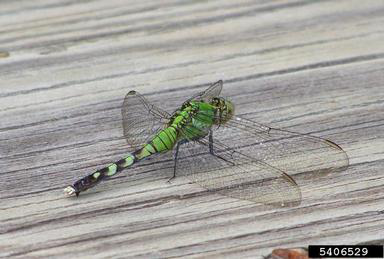
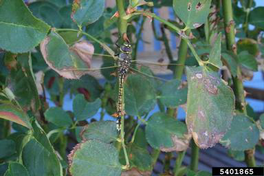
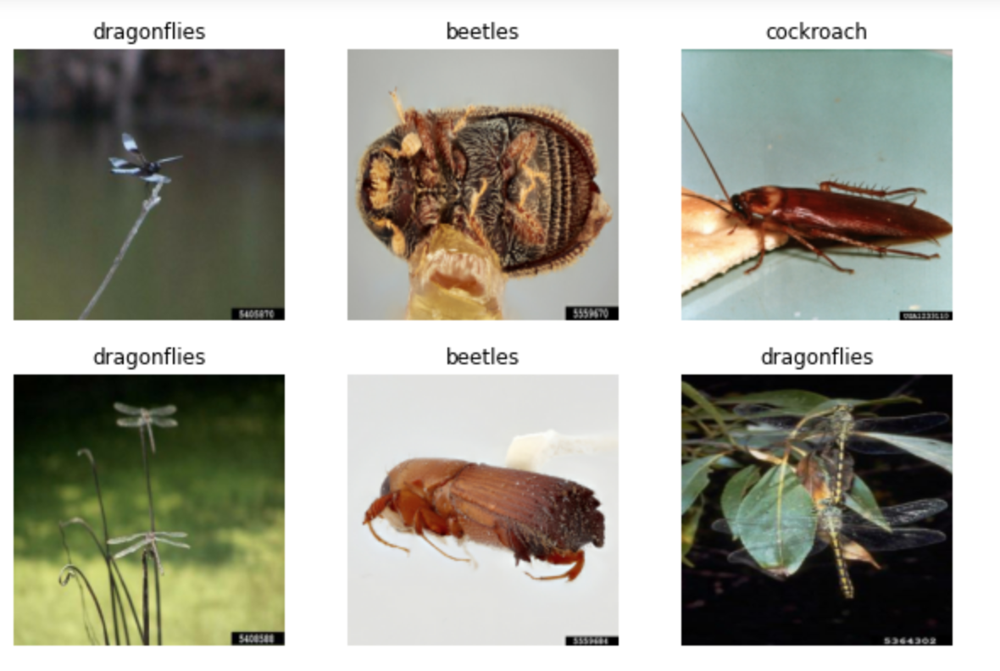
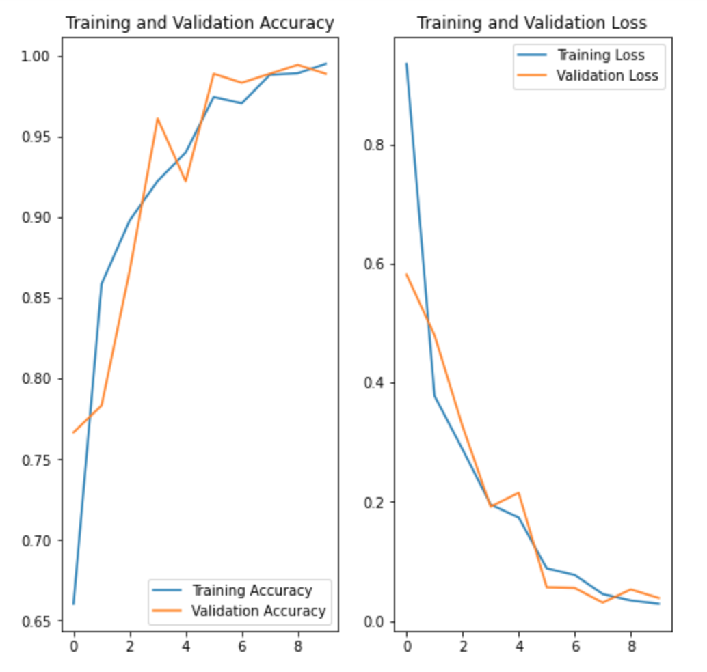
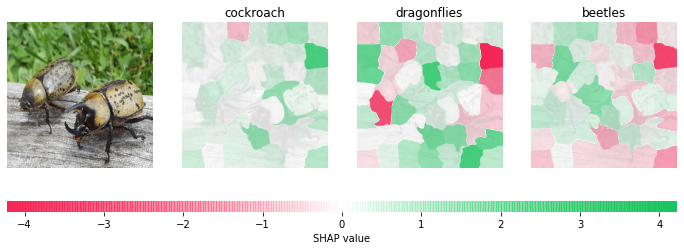

This blog shows how I applied TensorFlow and built a deep learning model for image classification in Python. Images are composed by pixels which are the features included in the model. Colors within each image can be expressed by the RGB values (a combination of red, green, and blue ranging from 0 to 255). Therefore, a image can be read as a numeric array by computers.
The whole process followed a basic machine learning workflow:
- Examine and understand data
- Build an input pipeline
- Build the model
- Train the model
- Test the model
- Explain the model
Step 1: Data Exploration
I downloaded the training and test images from here and then read the data in the jupyter notebook. There are 1019 images for the training dataset and 180 images for the test dataset. The following output the example images of dragon flies for the training and test data.
# showing example picture in the training dataset
dragon_flies_train = list(train_dir.glob('dragonflies/*'))
train_pic = PIL.Image.open(str(dragon_flies_train[0]))
train_pic

# showing example picture in the test dataset
dragon_flies_test = list(test_dir.glob('dragonflies/*'))
test_pic = PIL.Image.open(str(dragon_flies_test[0]))
test_pic

Step 2: Dataset Creation
Firstly I defined some paramters for the loader, and then used tf.keras.utils.image_dataset_from_directory utility to transfer a directory of images on disk to a tf.data.Dataset. Based on this dataset, we knew there are three types of insects: dragon flies, beetles, and cockroach in both training and test dataset.
batch_size = 32
img_height = 256
img_width = 256
train_process = tf.keras.preprocessing.image_dataset_from_directory(
train_dir,
image_size = (img_height, img_width),
color_mode = "rgb",
batch_size = batch_size
)
test_process = tf.keras.preprocessing.image_dataset_from_directory(
test_dir,
image_size = (img_height, img_width),
color_mode = "rgb",
batch_size = batch_size
)
# return the names of classes
class_names = train_process.class_names
The following visualizes the first six images of the six images of the test dataset.
# visualize the test data
plt.figure(figsize = (10, 10))
for images, labels in test_process.take(1):
for i in range(6):
ax = plt.subplot(3, 3, i + 1)
plt.imshow(images[i].numpy().astype("uint8"))
plt.title(class_names[labels[i]])
plt.axis("off")

The dataset was prepared in the following way.
AUTOTUNE = tf.data.AUTOTUNE
train_process = train_process.cache().shuffle(1000).prefetch(buffer_size = AUTOTUNE)
test_process = test_process.cache().prefetch(buffer_size = AUTOTUNE)
normalization_layer = layers.Rescaling(1./255)
normalized_train = train_process.map(lambda x, y: (normalization_layer(x), y))
image_batch, labels_batch = next(iter(normalized_train))
first_image = image_batch[0]
# the pixel values are now in `[0,1]`.
print(np.min(first_image), np.max(first_image))
Step 3: Build the Model
The Sequential model consists of three convolution blocks (tf.keras.layers.Conv2D) with a max pooling layer (tf.keras.layers.MaxPooling2D) in each of them. There is a fully-connected layer (tf.keras.layers.Dense) with 128 unites on top of it that is activated by a ReLU activation function.
# create the model
num_classes = 3
img_height = 256
img_width = 256
model = Sequential([
layers.Rescaling(1./255, input_shape = (img_height, img_width, 3)),
layers.Conv2D(16, 3, padding = 'same', activation = 'relu'),
layers.MaxPooling2D(),
layers.Conv2D(32, 3, padding = 'same', activation = 'relu'),
layers.MaxPooling2D(),
layers.Conv2D(64, 3, padding = 'same', activation = 'relu'),
layers.MaxPooling2D(),
layers.Flatten(),
layers.Dense(128, activation = 'relu'),
layers.Dense(num_classes)
])
The model was compiled by tf.keras.optimizers.Adam optimizer and tf.keras.losses.SparseCategoricalCrossentropy function.
model.compile(optimizer = 'adam',
loss = tf.keras.losses.SparseCategoricalCrossentropy(from_logits = True),
metrics = ['accuracy'])
model.summary()
The number of total paramters which will be trained is 8,412,707.
Step 4: Train the Model
epochs = 10
history = model.fit(
train_process,
validation_data = test_process,
epochs = epochs
)
The plots of loss and accuracy on the training and validation sets were created.

Step 5: Test the Model
The model was tested by three new figures for these three types of insects.
# upload a new picture of dragonfly and then check whether its classification is correct
dragon_fly = tf.keras.utils.load_img(
"dragon_fly.png", target_size = (img_height, img_width)
)
dragon_fly_array = tf.keras.utils.img_to_array(dragon_fly)
dragon_fly_array = tf.expand_dims(dragon_fly_array, 0) # Create a batch
dragon_fly_predictions = model.predict(dragon_fly_array)
dragon_fly_score = tf.nn.softmax(dragon_fly_predictions[0])
print(
"This image most likely belongs to {} with a {:.2f} percent confidence."
.format(class_names[np.argmax(dragon_fly_score)], 100 * np.max(dragon_fly_score))
)
The output returned that “This image most likely belongs to dragonflies with a 99.98 percent confidence.”
# upload a new picture of beetle and then check whether its classification is correct
beetle = tf.keras.utils.load_img(
"beetle.jpeg", target_size = (img_height, img_width)
)
beetle_array = tf.keras.utils.img_to_array(beetle)
beetle_array = tf.expand_dims(beetle_array, 0) # Create a batch
beetle_predictions = model.predict(beetle_array)
beetle_score = tf.nn.softmax(beetle_predictions[0])
print(
"This image most likely belongs to {} with a {:.2f} percent confidence."
.format(class_names[np.argmax(beetle_score)], 100 * np.max(beetle_score))
)
The output returned that “This image most likely belongs to beetles with a 98.60 percent confidence.”
# upload a new picture of cockroach and then check whether its classification is correct
cockroach = tf.keras.utils.load_img(
"cockroach.jpeg", target_size = (img_height, img_width)
)
cockroach_array = tf.keras.utils.img_to_array(cockroach)
cockroach_array = tf.expand_dims(cockroach_array, 0) # Create a batch
cockroach_predictions = model.predict(cockroach_array)
cockroach_score = tf.nn.softmax(cockroach_predictions[0])
print(
"This image most likely belongs to {} with a {:.2f} percent confidence."
.format(class_names[np.argmax(cockroach_score)], 100 * np.max(cockroach_score))
)
The output returned that “This image most likely belongs to cockroach with a 95.37 percent confidence.”
Therefore, based on the result of these three cases, the accuracy of this model is quite high.
Step 6: Explain the Model
To explain the prediction of the new beetle figure, the concept of SHAP was applied. After segmenting the image, we didn’t need to focus on the explanation for every pixel. Instead, we can just focus on the explantion for each segment. The following is visualizing the explantion of the prediction. We can detect the importance of each segment on the prediction of this figure.

If you find this blog helpful, please feel free to contact me or bookmark this website. Thank you for reading!